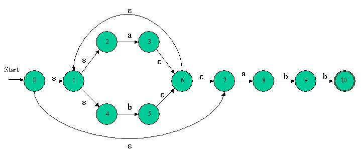
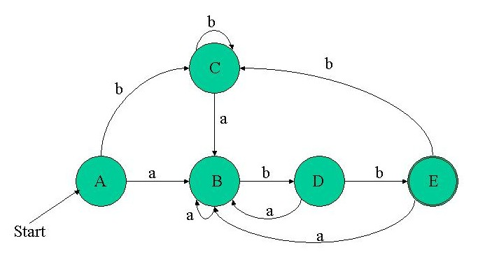

A small debt
Before we move to our next major topic in Regex recognition, there's a little something I owe you from the last column. The regex parsing implementation in regex_parse.cpp lacks something: since it recognizes simple characters "as is", it's not possible to feed eps to it (it takes it for "e" followed by "p" followed by "s"). So, to rectify this problem, I added an implementation for the traditional regex symbol ? (zero or one). Take a look at regex_parse.cpp to see how it's done - keep in mind that x? is equivalent to (x|eps).
Converting NFAs to DFAs
The N in NFA stands for non-deterministic. Our computers, however, are utterly deterministic beasts, which makes "true" simulation of an NFA impossible. But we do know how to simulate DFAs (in fact, I showed it in the second part of this series). So, what's left is to see how NFAs can be converted to DFAs. This is the topic of this chapter.
Introduction
The algorithm for constructing from an NFA a DFA that recognizes the the same language is called "Subset Construction". The main idea of this algorithm is in the following observations:
- In the transition table of an NFA, given a state and an input there's a set of states we can move to. In a DFA, however, there's only one state we can move to.
- Because of eps transitions, even without an input there's a set of states an NFA can be in at any given moment. Not so with the DFA, for which we always know exactly in what state it is.
- Although we can't know in which state from the sets described above the NFA is, the set is known. Therefore, we will represent each set of NFA states by a DFA state. The DFA uses its state to keep track of all possible states the NFA can be in after reading each input symbol.
Take, for example, the familiar NFA of the (a|b)*abb regex (generated automatically by Thompson's Construction, with the code from the last column):

The initial state of this NFA is 0... or is it ? Take a look at the diagram, and count in how many states this NFA can be before any input is read. If you remember the previous columns where I explained how eps transitions work, you should have no trouble noticing that initially, the NFA can be in any of the states {0, 1, 2, 4, 7}, because these are the states reachable by eps transitions from the initial state.
Note: the set T is reachable by eps from itself by definition (the NFA doesn't have to take an eps transition, it can also stay in its current state).
Now imagine we received the input a. What happens next ? In which states can the NFA be now ? This should be easy to answer. Just go over all the states the NFA can be in before the input, and see where the input a leads from them. This way, a new set emerges: {1, 2, 3, 4, 6, 7, 8}. I hope you understand why: initially, the NFA can be in states {0, 1, 2, 4, 7}. But from states 0, 1 and 4 there are no transitions on a. The only transitions on a from that set are from state 2 (to state 3) and from state 7 (to state 8). However, the states {3, 8} is an incomplete answer. There are eps transitions from these states - to states {1, 2, 4, 6, 7}, so the NFA can actually be in any of the states {1, 2, 3, 4, 6, 7, 8}.
If you understand this, you understand mostly how the Subset Construction algorithm works. All that's left is the implementation details. But before we get to the implementation of the conversion algorithm itself, there are a couple of prerequisites.
eps-closure
Given N - an NFA and T - a set of NFA states, we would like to know which states in N are reachable from states T by eps transitions. eps-closure is the procedure that answers this question. Here is the algorithm:
algorithm eps-closure
inputs: N - NFA, T - set of NFA states
output: eps-closure(T) - states reachable from T by eps transitions
eps-closure(T) = T
foreach state t in T
push(t, stack)
while stack is not empty do
t = pop(stack)
foreach state u with an eps edge from t to u
if u is not in eps-closure(T)
add u to eps-closure(T)
push(u, stack)
end
return eps-closure(T)
This algorithm iteratively finds all the states reachable by eps transitions from the states T. First, the states T themselves are added to the output. Then, one by one the states are checked for eps transitions, and the states these transitions lead to are also added to the output, and are pushed onto the stack (in order to be checked for eps transitions). The process proceeds iteratively, until no more states can be reached with eps transitions only.
For instance, for the (a|b)*abb NFA above, eps-closure({0}) = {0, 1, 2, 4, 7}, eps-closure({8, 9}) = {8, 9}, etc.
In the attached source code, the implementation of eps-closure is in the file subset_construct.cpp, function build_eps_closure. It follows the algorithm outlined above very closely, so you should have no trouble understanding it.
move - a new NFA member function
Given T - a set of NFA states, and A - an input, we would like to know which states in the NFA are reachable from T with the input A. This operation was implemented in the function move, in nfa.cpp (member of the NFA class). The function is very simple. It traverses the set T, and looks for transitions on the given input, returning the states that can be reached. It doesn't take into account the eps transitions from those states - there's eps-closure for that.
Keeping track of the input language of an NFA
For reasons that will soon become obvious, we must keep track of the input language used in the NFA. For example, for the regex (a|b)*abb the language is {a, b}. A new member was added to the NFA class for this purpose - inputs. Take a look at the implementation in nfa.cpp to see how it's managed.
DFA implementation
Since we intend to build DFAs in this column, we need a DFA implementation. A very basic implementation was coded in dfa.h - take a look at it now. The DFA's transition table is implemented with a map, that maps (state, input) pairs to states. For example, (t1, i) will be mapped to t2 if input i in state t1 leads to state t2. Note that it's not the same representation as the one I used for the NFA. There are two reasons for this difference:
- I want you to see two different implementations of a graph (which is what a transition table is, as I told you before). Both are legitimate for certain purposes.
- A little bit of cheating... I know which operations I'll need from the DFA, so I'm tailoring the representation to these operations. This is a very common programming trick - one should always think about the ways a data structure will be used before he designs its exact implementation.
So take a look at dfa.h - the DFA implementation is very simple - only a transition table, a start state and a set of final states. There are also methods for showing the DFA and for simulating it...
To remind you, this is the algorithm for DFA simulation (from Algorithmic Forays 2):
algorithm dfa-simulate
inputs: D - DFA, I - Input
output: ACCEPT or REJECT
s = start state of D
i = get next input character from I
while not end of I do
s = state reached with input i from state s
i = get next input character from I
end
if s is a final state
return ACCEPT
else
return REJECT
Let's now finally learn how the DFA is built.
Subset Construction
In the Introduction, I provided some observations about following NFA states, and gave an example. You saw that while it's impossible to know in what state an NFA is at any given moment, it's possible to know the set of states it can be in. Then, we can say with certainty that the NFA is in one of the states in this set, and not in any state that's not in the set.
So, the idea of Subset Construction is to build a DFA that keeps track where the NFA can be. Each state in this DFA stands for a set of states the NFA can be in after some transition. "How is this going to help us ?", you may ask yourself. Good question.
Recall how we simulate a DFA (if you don't feel confident with this material, read the 2nd part of Algorithmic Forays again). When can we say that a DFA recognizes an input string? When the input string ends, we look at the state we're left in. If this is a final state - ACCEPT, if it's not a final state - REJECT.
So, say that we have a DFA, each state of which represents a set of NFA states. Since a NFA will always "pick the correct path", we can assume that if the set contains a final state, the NFA will be in it, and the string is accepted. More formally: A DFA state D represents S - a set of NFA states. If (and only if) one or more of the states in S is a final state, then D is a final state. Therefore, if a simulation ends in D, the input string is accepted.
So, you see, it's useful to keep track of sets of NFA states. This will allow us to correctly "simulate" an NFA by simulating a DFA that represents it.
Here's the Subset Construction algorithm:
algorithm subset-construction
inputs: N - NFA
output: D - DFA
add eps-closure(N.start) to dfa_states, unmarked
D.start = eps-closure(N.start)
while there is an unmarked state T in dfa_states do
mark(T)
if T contains a final state of N
add T to D.final
foreach input symbol i in N.inputs
U = eps-closure(N.move(T, i))
if U is not in dfa_states
add U to dfa_states, unmarked
D.trans_table(T, i) = U
end
The result of this procedure is D - a DFA with a transition table, a start state and a set of final states (not incidentally just what we need for our DFA class...).
Here are some points to help you understand how subset-construction works:
- It starts by creating the initial state for the DFA. Since, as we saw in the Introduction, an initial state is really the NFA's initial state plus all the states reachable by eps transitions from it, the DFA initial state is the eps-closure of the NFA's initial state.
- A state is "marked" if all the transitions from it were explored.
- A state is added to the final states of the DFA if the set it represents contains the NFA's final state
- The rest of the algorithm is a simple iterative graph search. Transitions are added to the DFA transition table for each symbol in the alphabet of the regex. So the DFA transition actually represents a transition to the eps-closure in each case. Recall once again: a DFA state represents a set of states the NFA can be in after a transition.
This algorithm is implemented in the function subset_construct in subset_construct.cpp, take a look at it now. Here are some points about the implementation:
- dfa_states from the algorithm is represented by two sets: marked_states and unmarked_states, with the obvious meanings.
- Since DFA states are really sets of NFA states (see the state_rep typedef), something must be done about numbering them properly (we want a state to be represented by a simple number in the DFA). So, the dfa_state_num map takes care of it, with the numbers generated on-demand by gen_new_state.
- The loop runs while the unmarked_states set is not empty. Then, "some" state is marked by taking it out from the unmarked set (the first member of the set is picked arbitrarily) and putting it into the marked set.
I hope an example will clear it all up. Let's take our favorite regex - (a|b)*abb, and show how the algorithm runs on the NFA created from it. Here's the NFA again:
Following the algorithm: The start state of the equivalent DFA is the eps-closure of NFA state 0, which is A = {0, 1, 2, 4, 7}. So, we enter into the loop and mark A. A doesn't contain a final state, so we don't add it to the DFA's final set. The input symbol alphabet of the regex (a|b)*abb is {a, b}, so first we compute eps-closure(move(A, a)). Let's expand this:
eps-closure(move({0, 1, 2, 4, 7}, a)) = eps-closure({3, 8}) = {1, 2, 3, 4, 6, 7, 8}
Let's call this set B. B is not a member of dfa_states yet, so we add it there, unmarked. We also create the DFA transition D.trans_table(A, a) = B. Now we're back to the inner loop, with the input b. Of all the states in set A, the only transition on b is from 4 to 5, so we create a new set:
C = eps-closure((move(A, b)) = eps-closure({5}) = {1, 2, 4, 5, 6, 7}
So C is added, unmarked, to dfa_states. Since all the alphabet symbols are done for A, we go back to the outer loop. Are there any unmarked states ? Yes, there are B and C. So we pick B and go over the process again and again, until all the sets that are states of the DFA are marked. Then, the algorithm terminates, and D.trans_table contains all the relevant transitions for the DFA. The five different sets we get for DFA states are:
A = {0, 1, 2, 4, 7}
B = {1, 2, 3, 4, 6, 7, 8}
C = {1, 2, 4, 5, 6, 7}
D = {1, 2, 4, 5, 6, 7, 9}
E = {1, 2, 4, 5, 6, 7, 10}
A is the initial state of the DFA, since it contains the NFA initial state 0. E is obviously the only final state of the NFA, since it's the only one containing the NFA final state 10. If you follow the whole algorithm through and take note of the DFA transitions created, this is the resulting diagram:

You can easily:
- See that this is a DFA - no eps transitions, no more than a single transition on each input from a state.
- Verify that it indeed recognizes the regular expression (a|b)*abb
That's it, folks!
We've come a long way, and finally our mission is accomplished. During the past six columns, we've created a real regular expression engine. It's not a complete engine like the one Lex or Perl have, but it's a start. The basis has been laid, the rest is just extensions. Let's see what we have:
- A regular expression is read into a parse tree (implemented in regex_parse.cpp) - I didn't actually explain how this part is done, but you can trust me (and I hope you verified!) that it works.
- An NFA is built from the regular expression, using Thompson's Construction (implemented in nfa.h/cpp)
- The NFA is converted to a DFA, using the Subset Construction algorithm (implemented in subset_construct.h/cpp and dfa.h)
- The resulting DFA is simulated using the DFA simulation algorithm (implemented in dfa.h)
A small main function is implemented in regex_parse.cpp. It reads a regex and a string as arguments, and says whether the string fits the regex. It does it by going through the steps mentioned above, so I advise you to take a look at it and make sure that you understand the order in which things are called.
I hope you enjoyed this series, and got some insight into the important topics of regular expressions and Finite Automata (Deterministic and Non-Deterministic). Next time we'll talk about other things, but for now, "See ya" and, as always, questions/feedback/comments are most welcome.
© Copyright by Eli Bendersky, 2003. All rights reserved.
|
|